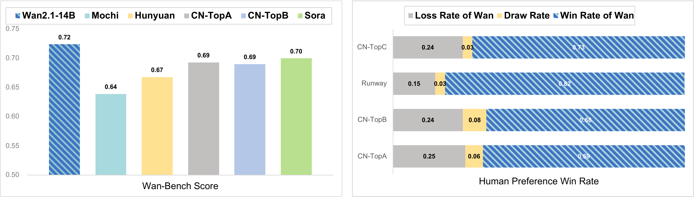
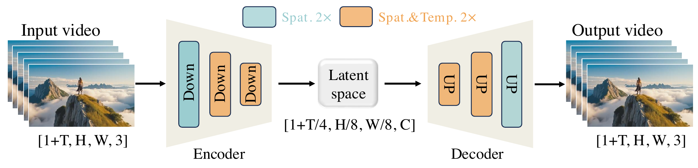
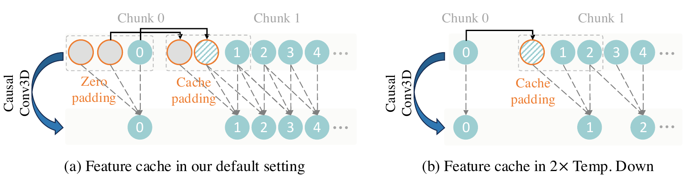
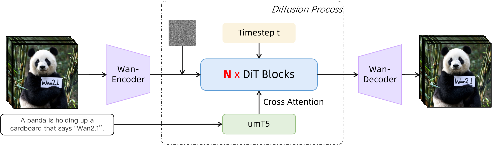
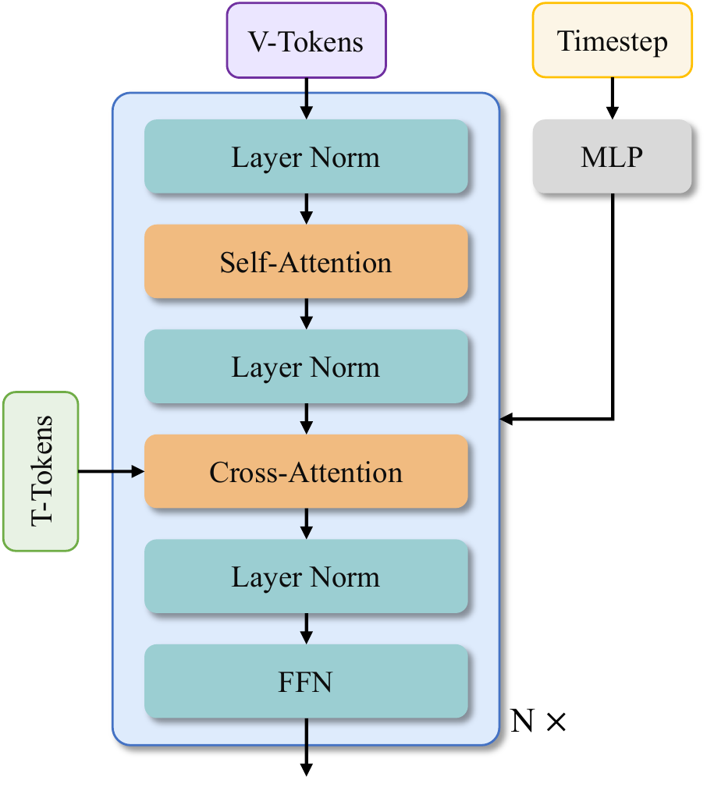
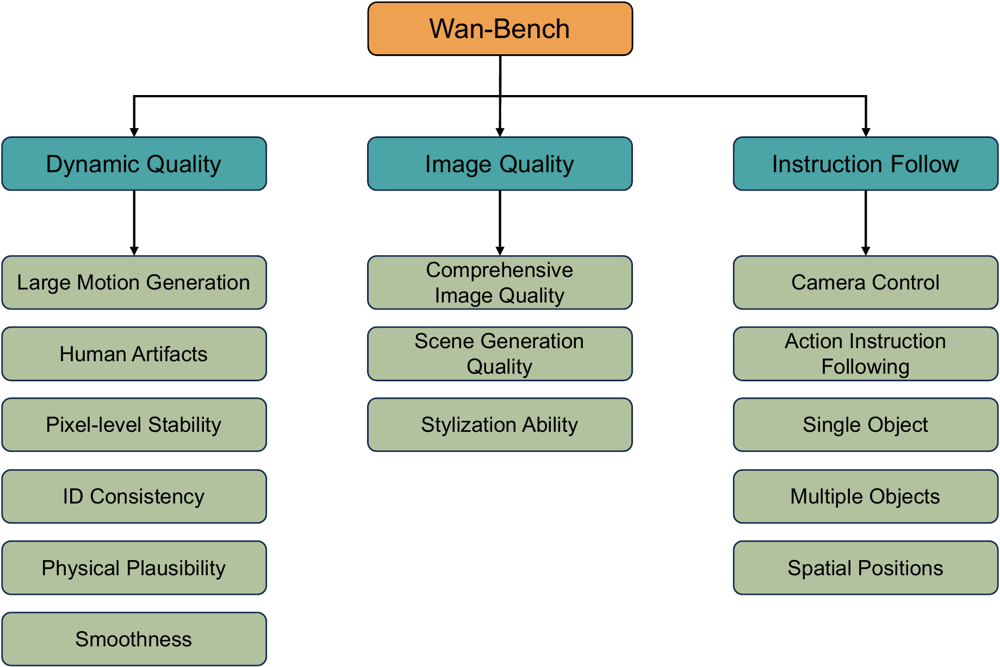
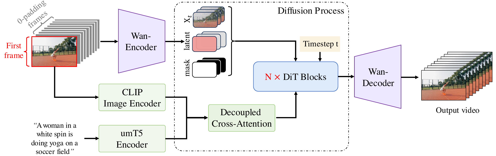

🎮 费曼一分钟（通俗速读）
开源文生视频（HunyuanVideo、CogVideoX、Mochi）与闭源 Sora 仍有性能/能力/效率差距。Wan2.1 = 阿里 Wan 团队全栈技术报告 + 开源：Wan-VAE（3D 因果、4×8×8 压缩、127M 参数 + feature cache 流式编解码）+ DiT + Flow Matching（umT5 文本、3D RoPE 全时空注意力、共享 timestep MLP 省 25% 参）+ 十亿级图文视频预训练（256→480→720 分辨率课程）+ Wan-Bench 自动评测。提供 1.3B（8.19GB VRAM 消费级）与 14B 两档；覆盖 T2V/I2V/编辑/个性化/相机/实时/音频等 8+ 下游。首个能在视频里生成中英文视觉文字的开源模型。
📄 原文：与 SOTA 开源/闭源模型对比

Abstract
This report presents Wan, a comprehensive open suite of video foundation models on the diffusion transformer + flow matching paradigm.
Four features: Leading Performance — 14B trained on billions of images/videos, scaling laws, beats open & many commercial models on Wan-Bench; Comprehensiveness — 1.3B & 14B, 8+ tasks including I2V, editing, personalization; first model generating Chinese & English visual text in video; Consumer Efficiency — 1.3B needs only 8.19 GB VRAM; Openness — full code & weights at github.com/Wan-Video/Wan2.1.
本报告发布开源视频基础模型套件 Wan，基于扩散 Transformer + Flow Matching。
四特点：领先性能（14B、千亿 token 级数据、Wan-Bench 超开源与部分商业模型）；全面（1.3B/14B、8+ 任务、视频内中英文视觉文字）；消费级效率（1.3B 仅需 8.19GB 显存）；开放（代码权重全开源）。
段落功能
定位「开源 Sora 级」技术报告：不只 T2V，而是 VAE+DiT+数据+评测+应用全链路公开。
1. Introduction
Since Sora, video generation advanced rapidly; open models (HunyuanVideo, Mochi, CogVideoX) narrowed the gap but three gaps remain: suboptimal performance, limited capabilities (mostly T2V only), insufficient efficiency for creators with limited GPUs.
Sora 之后视频生成快速进步；HunyuanVideo、Mochi、CogVideoX 等开源缩小差距，但仍有：性能不足、能力单一（多仅 T2V）、效率不够（算力门槛高）。
三重 gap → Wan 用 scaling + 多任务 + 小模型三条线同时回应。
Wan follows DiT + Flow Matching (like SD3/HunyuanVideo): cross-attention for text, full spatio-temporal attention, scaled to 14B on $\mathcal{O}(1)$ trillion tokens from billions of images/videos.
Downstream: I2V, instruction editing, zero-shot personalization, real-time generation, audio, etc. A 1.3B model runs on consumer GPUs (8.19G VRAM) while beating many larger open models.
Wan 走 DiT + Flow Matching 路线：文本 cross-attn、全时空注意力、14B 规模 + 万亿级 token 训练。
扩展 I2V、编辑、个性化、实时、音频等；1.3B 仅需 8.19G 显存且超多数更大开源模型。
与 CogVideoX 同属 DiT 视频线，但 Wan 强调全栈透明（数据流水线、Wan-Bench、8 任务）+ 双规格开源。
📄 原文 Figure：Wan 生成样例（大动作 / 中英文文字 / 多任务）
2. Model Design — Wan-VAE & DiT
Wan-VAE: 3D causal VAE compresses $V \in \mathbb{R}^{(1+T)\times H \times W \times 3}$ to latent $[1{+}T/4,\; H/8,\; W/8]$ with 16 channels — total 4×8×8 spatiotemporal compression. First frame spatial-only (MagViT-v2 style). RMSNorm replaces GroupNorm for causality + feature cache.
127M params; 3-stage training: 2D image VAE → inflate to 3D on low-res 5-frame video → GAN fine-tune on HQ video. Reconstruction PSNR competitive; 2.5× faster than HunyuanVideo VAE at same hardware.
Wan-VAE：3D 因果 VAE，视频 $V$ 压到 $[1{+}T/4, H/8, W/8]$、16 通道，总压缩 4×8×8。首帧仅空间压缩。RMSNorm + feature cache 保因果与效率。
127M 参数；三阶段训练（2D 图 VAE → 3D 低分短视频 → GAN 微调）。重建质量 competitive；同硬件比 HunyuanVideo VAE 快 2.5 倍。
与 CogVideoX / HunyuanVideo VAE
压缩率同为 16 通道 · 4×8×8（Wan 记法：时间×高×宽；CogVideoX 记法 8×8×4 为空间×空间×时间，数值等价）。差异在工程化与推理，见下表与 §Feature Cache。
Wan-VAE vs CogVideoX 3D VAE — 异同对照
| 维度 | CogVideoX（ICLR 2025） | Wan-VAE（Wan2.1 报告 §4.1） |
|---|---|---|
| 时空压缩 | 8×8×4，16 latent 通道；$T'=\lfloor(T{-}1)/4\rfloor{+}1$ | 4×8×8（同率）；输入格式 1+T 帧 → latent 1+T/4 |
| 因果性 | 3D 因果卷积，仅向过去 padding；防 future leak | 同；且为 feature cache 前置条件 |
| 首帧处理 | 论文强调 3D 统一编码；训练帧数 4k+1 | 首帧仅空间压缩（MagViT-v2），利于 T2I / 单帧 I2V 与图数据 inflate |
| 归一化 | 典型 3D VAE 用 GroupNorm（跨帧统计） | GroupNorm → RMSNorm：不混未来帧统计，与 chunk 推理兼容（报告明确动机） |
| 模型体量 | 未强调极小 VAE；训练用 Context Parallel 扩长视频 | 127M 参；上采样层输入通道减半 → 推理显存 −33% |
| 训练策略 | 两阶段：256²×17 帧 → CP 161 帧 + GAN（SAT 开源） | 三阶段：2D 图 VAE → inflate 3D（128²×5 帧）→ 多分辨率 + 3D GAN |
| 长视频推理 | 训练侧 temporal Context Parallel（多卡切时间维） | 推理侧 feature cache：单卡 chunk 编解码，每 chunk ≤4 帧，$O(1)$ 历史缓存 |
| 相对指标 | WebVid 17 帧 flicker 85.5 / PSNR 29.1（自报） | 720×720×25 帧：PSNR competitive；同硬件重建 2.5× 快于 HunyuanVideo（报告 Fig. vae_psnr） |
改进归纳（相对 CogVideoX 一代开源 VAE）：① 不提高压缩率的前提下把 VAE 做更小更快（127M + cache），把算力让给 14B DiT；② RMSNorm + cache 使任意长视频单卡流式编解码可行（CogVideoX 论文侧重多卡 CP 训练，未描述同等 cache）；③ 2D→3D inflate + 首帧空间特化，降低视频 VAE 冷启动成本；④ 重建在文字/高运动场景上报告定性优于同级 VAE（Fig. vae_visual）。
注意：二者 latent 网格可对接同类 DiT（patch (1,2,2)）；Wan 选 Flow Matching + cross-attn DiT，CogVideoX 选 Expert AdaLN + 3D full attention —— VAE 层改进独立於 DiT 设计。
📄 原文 Figure：Wan-VAE 框架（4×8×8 压缩）

📄 原文 Figure：Feature Cache 机制

Feature Cache 机制详解
问题：3D 因果卷积核大小为 3（时间维），计算第 $t$ 帧输出需要 $t{-}2,t{-}1,t$ 三帧特征。若一次 encode 全长视频，显存 $\propto T$；若按 chunk 切分但无缓存，chunk 边界处缺少历史帧 → 与整段编码不一致，出现接缝伪影。
思路：按 latent 时间步切 chunk。像素侧每 chunk 最多 4 帧（首 chunk 1 帧，后续各 4 帧），与 4× 时间压缩对齐，得 $1{+}T/4$ 个 latent 帧。每个 chunk 前向时，把上一 chunk 末尾的特征图写入 cache，拼到当前 chunk 时间维前面，再喂给 CausalConv3d —— 等价于「全序列一次卷积」，但峰值显存只与 chunk 大小相关。
常见误解：chunk 为什么是 4 帧，不是 3 帧？
核大小 3 与 chunk 大小 4 是两件独立的事，不要混为一谈：
| 概念 | 数值 | 由什么决定 |
|---|---|---|
| 因果 Conv3d 时间核 $k_t$ | 3 | 输出第 $t$ 帧需 $t{-}2,t{-}1,t$ → feature cache 存 2 帧（CACHE_T=2） |
| 像素 chunk 大小 | 1, 4, 4, … | VAE 时间维 4× 压缩 + 首帧仅空间压 → 每个 latent 步对应 1 或 4 像素帧 |
chunk=4 来自压缩拓扑（一个 $z_i$ 吃掉 4 像素帧）；cache=2 来自卷积感受野（跨 chunk 衔接）。chunk 内 4 帧足够完成该 latent 步的全部因果卷积与时间下采样；若只切 3 帧会少算 1 帧，latent 与整段 encode 不一致。
CACHE_T=2 来自 $k_t{-}1$，与 chunk 含 4 像素帧不矛盾。flowchart LR
subgraph why4["chunk=4 来自 4× 时间压缩"]
P1["像素 1–4"] --> Z1["latent z₁"]
P2["像素 5–8"] --> Z2["latent z₂"]
end
subgraph why2["cache=2 来自 k_t=3"]
C["上一 chunk 末 2 帧特征"] --> CONV["CausalConv3d"]
CH["当前 chunk 首帧"] --> CONV
end两路逻辑正交：左 = 压缩拓扑决定一次 forward 吃几帧像素；右 = 卷积核决定跨 chunk 带几帧历史。
Feature Cache 的作用与优势
一句话：在分块流式跑 Wan-VAE 时，用 $O(1)$ 大小的历史特征缓存，换数值等价于整段 encode + 峰值显存与视频长度解耦。
作用（解决什么）
- 跨 chunk 因果连续：因果 Conv3d 在 chunk 边界需要「过去帧」；cache 保存上一 chunk 末 1–2 帧中间特征（非原始像素），拼进当前 chunk，避免用零 pad 伪造历史。
- 数值一致：chunk-wise + cache 的输出应与一次性喂入全长视频 bitwise 级一致（理想实现下），无 chunk 接缝 flicker / latent 跳变。
- 显存有界：每次 encoder 只处理 ≤4 像素帧（首 chunk 1 帧），激活峰值 $\approx O(HW)$，不随总帧数 $T$ 线性涨 → 长视频 / 高分辨率 decode 不 OOM。
- 配合 RMSNorm：归一化不跨未来帧聚合统计；chunk 切分 + cache 与 RMSNorm 兼容（GroupNorm 跨帧统计会破坏因果 chunk 语义，报告因此替换）。
优势（相对其它做法）
| 方案 | 显存 | 长视频 | 与整段 encode 一致 | 单卡推理 |
|---|---|---|---|---|
| 整段一次 encode/decode | $\propto T$ · 易 OOM | 受 GPU 上限 | ✓ 基准 | 长片困难 |
| chunk 切分、无 cache | 有界 | 可分段 | ✗ 边界伪影 | ✓ |
| Wan feature cache | 有界（≤4 帧/chunk + 小 cache） | 报告称可稳定任意长 | ✓ 等价整段 | ✓ 127M VAE 单卡 |
| 训练侧 Context Parallel（CogVideoX 等） | 多卡分摊 $T$ | 训练用 | ✓ | 推理未必实现同等 cache |
工程收益（报告 §4.1）
- 吞吐：同硬件 VAE 重建比 HunyuanVideo 2.5× 快（小模型 127M + cache 减峰值显存，高分辨率优势更大）。
- DiT 训练友好：VAE encode 更快 → 同样 GPU·hour 可过更多 latent，后续 14B DiT 数据吞吐受益。
- 流式场景：实时生成 / 逐段 decode 时，可边生成边解码，不必等全长 latent 落盘。
- 存储开销极小：每层 CausalConv3d 仅 cache 1–2 帧特征图（`feat_cache` 数组长度 = 层数），相对整段激活可忽略。
flowchart TB
subgraph pain["无 cache 的痛点"]
A1["长视频整段 encode"] --> OOM["显存 ∝ T"]
A2["chunk 无历史"] --> SEAM["边界伪影 / latent 不一致"]
end
subgraph gain["feature cache 收益"]
B1["chunk ≤4 帧"] --> MEM["峰值显存有界"]
B2["cache 1–2 帧特征"] --> EQ["≈ 整段 encode"]
B1 --> STREAM["任意长视频流式编解码"]
B2 --> STREAM
end论文结论（§4.1 Efficient Inference）：*optimizes memory utilization, preserves feature coherence across chunk boundaries, supporting stable inference for infinite-length videos*。
| 场景（论文 Fig. vae_cache） | 缓存内容 | 首 chunk | 后续 chunk |
|---|---|---|---|
| (a) 普通因果 Conv3d，$k_t{=}3$，stride 1 | 保存最后 2 帧中间特征（CACHE_T=2） | 时间维零填充 2 帧 dummy | conv(cat(cache, chunk))，再更新 cache |
| (b) 时间下采样 Conv3d，stride 2 | 保存最后 1 帧特征 | 无额外 pad | 仅非首 chunk 在卷积前 cat 1 帧 cache，保证输出长度严格 ÷2 |
chunk 划分（与代码一致）：输入 $T$ 帧（$1{+}T$ 格式），iter = 1 + (T-1)//4；第 0 次取帧 [:, :, 0:1]，第 $i$ 次取 [:, :, 1+4*(i-1) : 1+4*i]，encoder 输出沿时间 concat → 完整 latent。
decode 同理：按每个 latent 时间步逐块解码（每步 1 个 latent 帧），复用同一套 feat_cache。效果：显存 bounded、chunk 边界连续、理论上可无限长视频 —— 报告 §4.1 称 "infinite-length videos"。完整实现见 #code §②。
DiT backbone: 3D patch embed $(1,2,2)$ → sequence length $L=(1{+}T/4)\cdot H/16 \cdot W/16$. Cross-attention embeds umT5 text; shared MLP predicts 6 AdaLN modulation params per block (≈25% param savings vs per-block MLP).
umT5-XXL chosen for multilingual (CN/EN + visual text), composition quality, faster convergence vs unidirectional LLMs.
DiT：3D patch $(1,2,2)$，序列长 $L=(1{+}T/4)\cdot H/16 \cdot W/16$。Cross-attention 注入 umT5 文本；共享 timestep MLP 预测 6 组 AdaLN 参数（省约 25% 参数）。
umT5-XXL：多语（含视觉文字）、构图更好、收敛更快。
自注意力 + cross-attn + FFN；3D RoPE 在代码侧实现时空位置编码（见 #code）。
📄 原文 Figure：Wan 整体架构


💻 代码对照 — Wan-VAE · WanModel · Flow 采样 · I2V
官方推理仓库：github.com/Wan-Video/Wan2.1（仅推理，无训练代码）。核心在 wan/modules/ 与 wan/text2video.py。
| 论文 | 代码 |
|---|---|
| Wan-VAE 4×8×8、16 通道 | wan/modules/vae.py · WanVAE · CausalConv3d |
| DiT + cross-attn | wan/modules/model.py · WanModel · WanAttentionBlock |
| umT5 文本 | wan/modules/t5.py · T5EncoderModel |
| Flow Matching 采样 | wan/utils/fm_solvers_unipc.py · FlowUniPCMultistepScheduler |
| I2V 条件拼接 + CLIP | WanI2V · WanI2VCrossAttention · wan/image2video.py |
| 1.3B / 14B 配置 | wan/configs/wan_t2v_1_3B.py · wan_t2v_14B.py |
① Wan-VAE vs CogVideoX — 压缩率相同，工程路径不同
二者 DiT 侧都消费 shape $\approx [16,\;1{+}T/4,\;H/8,\;W/8]$ 的 latent；CogVideoX SAT 里 temporal_compress_times: 4、z_channels: 16 与 Wan z_dim=16、stride $(4,8,8)$ 对齐。Wan 的增量在127M 小模型 + RMSNorm + feature cache 流式推理，而非更高压缩比。
| 能力 | CogVideoX ContextParallelEncoder3D | Wan WanVAE_ |
|---|---|---|
| 长视频训练 | 多卡 Context Parallel，rank 间传 $k{-}1$ 帧 halo | 报告未强调 CP；三阶段 inflate 训练 |
| 长视频推理 | 通常整段 latent 一次过 DiT；VAE 整段或按实现 | encode 显式 1+4+4… chunk + 每层 conv cache |
| 单帧 / T2I | T=1 同一 wrapper | 首 chunk 仅 1 帧，与 MagViT-v2 首帧空间特化一致 |
② Feature Cache — chunk 划分与 CausalConv3d
仓库常量 CACHE_T = 2（wan/modules/vae.py）。每个 CausalConv3d 在 encoder/decoder 中各占用 cache 数组的一个槽位；chunk 切换时 cache 在层间传递，chunk 内按层顺序更新。
时间下采样 downsample3d 分支：cache 仅保留末 1 帧，且 time_conv(cat(cache_last_frame, x)) —— 对应论文 Fig.(b)。上采样 upsample3d 对称维护 cache，解码时时间维逐 latent 步展开。
③ WanVAE 推理 API
每次 encode/decode 结束调用 clear_cache() 重置 _enc_feat_map / _feat_map。训练三阶段（2D→3D→GAN）未开源。
④ WanModel — T2V / I2V 分支
对应论文 I2V：$z_t$、$z_c$、mask 沿 channel 拼接；CLIP 特征经 decoupled cross-attn（I2V 双路 attn 再相加）。
⑤ Flow Matching 推理采样
训练目标 $\mathcal{L}=\mathbb{E}\|u_\theta(x_t,c,t)-v_t\|^2$，$x_t=t x_1+(1-t)x_0$，$v_t=x_1-x_0$（Rectified Flow）——实现未公开，repo 仅有 prediction_type="flow_prediction" 采样侧。
⑥ 1.3B vs 14B 规模（config）
| 1.3B T2V | 14B T2V/I2V | |
|---|---|---|
dim | 1536 | 5120 |
num_layers | 30 | 40 |
num_heads | 12 | 40 |
| 文本编码 | UMT5-XXL encoder（512 token） | |
| 典型分辨率 | 480×832 | 720×1280 / 480×832 |
flowchart LR T[Prompt] --> T5[UMT5 encode] N[Gaussian noise] --> DIT[WanModel DiT] T5 --> DIT DIT --> Z[Latent x0] Z --> VAE[Wan-VAE decode] VAE --> V[Video MP4]
3. Training — Flow Matching & Curriculum
Flow matching objective (RF): sample $t \sim \text{logit-normal}$, $x_t = t x_1 + (1-t)x_0$, target velocity $v_t = x_1 - x_0$, minimize $\|u_\theta(x_t,c_{\text{txt}},t) - v_t\|^2$ (Eq. rf_loss).
Pre-training: 14B starts with 256px T2I (cross-modal alignment) → joint image-video stages: (1) 256px image + 192px 5s video; (2) 480px; (3) 720px 5s clips. Avoids OOM from 81-frame 720p direct training.
Post-training: same architecture, init from pre-train ckpt, 480/720 on curated post-train set. Optimizer: AdamW, bf16, lr $10^{-4}$ with FID/CLIP plateau decay.
Flow Matching：logit-normal 采样 $t$，线性插值 $x_t$，回归速度场 $v_t=x_1-x_0$，MSE 损失。
预训练：14B 先 256px 文生图 → 三阶段图文联合（256→480→720）。避免直接 81 帧 720p OOM。
后训练：同架构微调高质量数据；AdamW bf16。
- 与 SD3 同族：RF + logit-normal $t$ 采样。
- 与 CogVideoX 差异：Wan 强调先 T2I 再视频分辨率课程；CogVideoX 用 frame pack + 两阶段 VAE/DiT。
- 复现：训练细节在报告内，代码未开源 → 见 #code 仅推理路径。
4. Data Processing Pipeline
Principles: high quality, diversity, scale — billions of images/videos. Four-step cleaning: fundamental filters (OCR ratio, LAION aesthetic, NSFW, watermark, black border, overexposure, synthetic-image detector, blur, duration/resolution) remove ~50% candidates.
Semantic stage: motion quality, visual text mining, dense captioning (similar spirit to CogVideoX/Hunyuan — report details OCR-for-text-in-video pipeline).
原则：高质量、多样性、规模——十亿级图文视频。四步清洗：OCR 文字占比、美学、NSFW、水印、黑边、过曝、合成图检测、模糊、时长分辨率等，剔除约 50%。
语义阶段：运动质量、视觉文字挖掘、dense caption——与 CogVideoX 同类数据工程。
「视频内中英文文字」能力依赖视觉文字数据挖掘 + umT5 多语编码，不仅是 DiT 架构创新。
5. Experiments — Wan-Bench
Wan-Bench: automated metrics aligned with human preferences — dynamic quality, image quality, instruction following (13+ dimensions in Table).
1035 prompts × models; Wan 14B weighted score 0.724 beats open models and CN-TopA (0.693); competitive with Sora (0.700) on reported table. Human eval 700+ tasks: 14B wins on visual/motion/matching dimensions vs commercial baselines.
Wan-Bench：与人偏好对齐的自动评测（动态、画质、指令遵循等 13 维）。
1035 prompt 公平对比；Wan 14B 加权 0.724 超开源与 CN-TopA；与 Sora 0.700 可比。人类评测 700+ 任务：14B 在视觉/运动/匹配维度领先。
| 模型 | Weighted Score | 备注 |
|---|---|---|
| Sora | 0.700 | 闭源 |
| CN-TopA | 0.693 | 商业 |
| Wan 14B | 0.724 | 报告最优 |
| Wan 1.3B | 0.689 | 接近 Top 商业 |
| HunyuanVideo | 0.673 | 开源 |
| Mochi | 0.639 | 开源 |
自研 benchmark + 自评存在博弈风险；交叉外部 VBench 读者需自行核对。
📄 原文：Wan-Bench 维度示意

6. Extended Applications
I2V: condition image as first frame; zero-padded future frames → VAE latent $z_c$; binary mask $M$; channel-concat $[z_t, z_c, m]$ into DiT; CLIP global context via decoupled cross-attention. Unified mask training for continuation, first-last-frame, interpolation.
Report also covers: video editing (VACE), T2I, personalization, camera motion control, real-time streaming, audio (V2A) — each with dedicated section & figures.
I2V：首帧条件 + 零填充未来帧 → $z_c$；mask $M$ 与 $z_t$ channel 拼接进 DiT；CLIP 全局 context。统一 mask 训练支持续写、首尾帧、插帧。
另含：视频编辑、T2I、个性化、相机控制、实时流式、音频生成等 8+ 任务章节。
基础 T2V 权重 + 任务特定微调/adapter — 开源 repo 含 WanI2V、WanVace、WanFLF2V 等入口。
📄 原文 Figure：Wan-I2V 框架

7. Limitation & Conclusion
Limitations: large-motion fine detail still hard; 14B inference ~30 min/GPU without optimization; domain-specific (education/medical) weak.
Conclusion: open Wan-VAE + DiT + data + Wan-Bench + 1.3B/14B; plan to scale data & model further.
局限：大运动细节仍难；14B 单卡推理约 30 分钟；垂直领域不足。
结论：全栈开源推动社区；1.3B democratize 创作；持续 scaling。
报告自承效率瓶颈 — 与「消费级 1.3B」叙事形成产品分层：轻量推理 vs 质量旗舰 14B。
符号速查表
| 符号 | 含义 |
|---|---|
| $V$ | 输入视频 $(1{+}T)\times H\times W\times 3$ |
| $x_1$ | 干净 latent（VAE 编码） |
| $x_0$ | 标准高斯噪声 |
| $x_t$ | Flow 插值 $t x_1 + (1-t)x_0$ |
| $v_t$ | 真速度 $x_1 - x_0$ |
| $c_{\text{txt}}$ | umT5 文本 embedding（512 token） |
| $u_\theta$ | DiT 预测速度场 |
| $z_c, M$ | I2V 条件 latent 与二值 mask |
论证结构总览
核心主张（一句话）
在 DiT+Flow 主线上用小 VAE、大 DiT、万亿 token 数据、自动评测把开源视频生成推到可与闭源竞争，并以 1.3B 降低门槛。
🧩 结构化十问（AI 解构）
据 arXiv:2503.20314 技术报告回答。
Q1 · 论文试图解决什么问题？
Q2 · 这是否是一个新问题？
Q3 · 要验证什么科学假设？
Q4 · 相关研究如何归类？
Q5 · 解决方案的关键是什么？
Q6 · 实验是如何设计的？
Q7 · 数据集与代码是否开源？
Q8 · 结果是否支持假设？
Q9 · 主要贡献是什么？
Q10 · 下一步工作？
🔬 深挖追问
第一性原理 · Flow vs DDPM
Wan 与 SD3/Hunyuan 同选 Rectified Flow：直线路径 $x_t=t x_1+(1-t)x_0$ 比 VP 扩散少步采样退化更慢 — 工程上与 DiT 大规模训练配套。
第一性原理 · 小 VAE 大 DiT
127M VAE 把算力留给 14B DiT；feature cache 解决因果 3D 长序列推理 — 与「把压缩做激进、DiT 吃 token」的 Sora 叙事一致，但参数分配更透明。
第一性原理 · 开源 vs 报告
推理开源 + 训练闭源 = 半复现：可验证生成质量与 I2V 拼接逻辑，难复现 Wan-Bench 分数与 scaling 曲线。
批判性思维 · 盲区
- Wan-Bench 闭环：自研 prompt + 自研 scorer + 自家模型领先，需第三方 benchmark 交叉验证。
- 列表混淆：Wan2.1/Wan2.2 共享同一 arXiv PDF — 读 list 时须看 repo 分支与 checkpoint 版本。
- 30min/14B：与 1.3B「消费级」并存，实际创作仍可能只用小模型或云 API。
- 数据合规：十亿级内部+公开视频，版权与 opt-out 未展开。
- 视觉文字：能力突出但 OCR 过滤与文字生成数据比例未量化，难评估泛化边界。
📎 延伸阅读 · 外部解读
社区或第三方对 Wan2.1 的拆解、复现与观点文章。与本文精读（论文 + 官方 repo）互补；链接内容非官方，仅供对照阅读。
- 知乎专栏 Wan2.1 相关技术解读 zhuanlan.zhihu.com/p/2049928803955300345 · 可补充架构细节、部署经验或与本文不同的侧重点。
有新文章可在本页 #refs-external 追加 <li>；建议标注来源平台与简要说明。